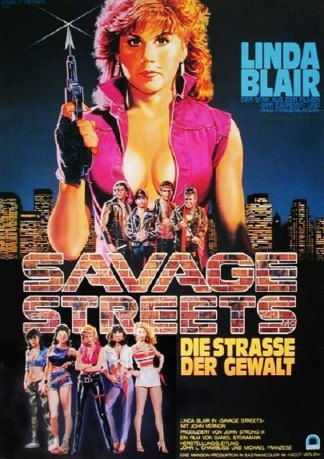

#10353 Savage Street - Straße der Gewalt
Alternativ: Savage Streets (Englischer Titel)
 
 IMDB-Wertung: 6.3 / 10
IMDB-Wertung: 6.3 / 10  Metascore: 0
Metascore: 0 
Super-Star Linda Blair spielt Brenda, die Anführerin der "Satins", einer Straßenbande, die nur Frauen aufnimmt. Sie liegen im ständigen Streit um Achtung und Gleichberechtigung mit den "Scars", einer Männerbande. Die Situation spitzt sich dramatisch zu, als Brendas taubstumme Schwester vergewaltigt wird. Die Frauen wollen die bestialische Tat gemeinsam aufklären, denn die im Koma liegende Schwester kann der Polizei nicht weiterhelfen. Alle Hinweise, die die Frauen erhalten, deuten auf die "Scars". Brenda ist außer sich vor Entsetzen und Wut. Sie schwört nicht eher zu ruhen, als bis alle "Scars" die gerechte Strafe erhalten haben...
Jahr: 1984
Dauer: 92 Minuten
FSK: BPjM Restricted
Land: USA Studio: MPMTonspuren: DTS - ,
Untertitel:
Auflösung: 1080p (1920x1080) Größe: 6717 MB
Genre: Action, Thriller, Drama, Krimi
Regisseur: Danny Steinmann, Tom DeSimone
Drehbuch: Norman Yonemoto, Danny Steinmann, John Strong
Soundtrack: John D'Andrea, Michael Lloyd
Darsteller:
 Linda Blair als Brenda
Linda Blair als Brenda John Vernon als Principal Underwood
John Vernon als Principal Underwood- Robert Dryer als Jake
- Sal Landi als Fargo
- Debra Blee als Rachel
- Lisa Freeman als Francine Anne Ramirez
- Marcia Karr als Stevie
 Linnea Quigley als Heather
Linnea Quigley als Heather- Ina Romeo als Stella
 Mitch Carter als Greg
Mitch Carter als Greg- Bob DeSimone als Mr. Meeker
- Brian Frishman als Wes
 Catherine McGoohan als Store Manager
Catherine McGoohan als Store Manager- Rebecca Perle als Cindy Clark
- Paula Shaw als Charlene
- Kristi Somers als Valerie
 Carole White als Ms. Jenkins
Carole White als Ms. Jenkins- Suzee Slater als Fadden's girlfriend (uncredited)
 Brinke Stevens als High School Girl in Shower (uncredited)
Brinke Stevens als High School Girl in Shower (uncredited)- Johnny Venocur als Vince
- Scott Mayer als Red
- Luisa Leschin als Maria
- Jill Jaxx als Waitress
- Richard DeHaven als Richie
- Susan Dean als Nurse
- Joy Hyler als Brenda's Mother
- Sean O'Grady als Fadden
- Troy Tompkins als Bobby
- Perla Walter als Rita
- Judy Walton als Ms. Young
- Louis Zito als Vince's Father
- Helen Kelly als Girl on Hollywood Blvd (uncredited)
Datei: X:\FSK18-1900-1999\Savage Street - Straße der Gewalt (1984, FSKBPjM Restricted, 1920x1080).mkv seit 30.12.2018
Festplatte: FSK18
 Es gibt insgesamt 108 Filme in der Gruppe 'FSK18-1900-1999'
Es gibt insgesamt 108 Filme in der Gruppe 'FSK18-1900-1999'